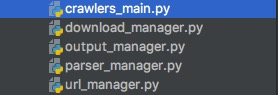
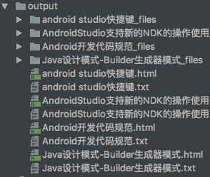

Python爬虫爬取博客园并保存
Python爬虫爬取博客园并保存
爬取博客园指定用户的文章修饰后全部保存到本地
首先定义爬取的模块文件：
- crawlers_main.py 执行入口
- url_manager.py url管理器
- download_manager.py 下载模块
- parser_manager.py html解析器（解析html需要利用的内容)
- output_manager.py 输出html网页全部内容文件（包括css,png,js等）

crawlers_main.py 执行入口


1 # coding:utf8 2 from com.crawlers import download_manager 3 from com.crawlers import output_manager 4 from com.crawlers import parser_manager 5 from com.crawlers import url_manager 6 7 8 class SpiderMain(object): 9 def __init__(self): 10 self.urls = url_manager.UrlManager() 11 self.downloader = download_manager.DownloadManager() 12 self.parser = parser_manager.ParserManager() 13 self.output = output_manager.OutputManager() 14 15 def craw(self, root_url): 16 html_root = self.downloader.download(root_url) 17 new_urls = self.parser.parseUrls(root_url,html_root) 18 self.urls.add_new_urls(new_urls) 19 count = 1 20 while self.urls.has_new_url(): 21 try: 22 new_url = self.urls.get_new_url() 23 print('craw %d : %s' % (count, new_url)) 24 html_cont = self.downloader.download(new_url) 25 new_data = self.parser.parse(new_url, html_cont) 26 self.output.collect_data(new_data) 27 if count == 1000: 28 break 29 count += 1 30 except: 31 print('craw failed') 32 33 self.output.output_html() 34 35 36 if __name__ == "__main__": 37 root_url = "http://www.cnblogs.com/zhuyuliang/" 38 obj_spider = SpiderMain() 39 obj_spider.craw(root_url)
url_manager.py url管理器
1 # coding:utf8 2 class UrlManager(object): 3 4 def __init__(self): 5 self.new_urls = set() 6 self.old_urls = set() 7 8 def add_new_url(self, url): 9 if url is None: 10 return 11 if url not in self.new_urls and url not in self.old_urls: 12 self.new_urls.add(url) 13 14 def add_new_urls(self, urls): 15 if urls is None or len(urls) == 0: 16 return 17 for url in urls: 18 self.add_new_url(url) 19 20 def has_new_url(self): 21 return len(self.new_urls) != 0 22 23 def get_new_url(self): 24 new_url = self.new_urls.pop() 25 self.old_urls.add(new_url) 26 return new_url
download_manager.py 下载模块
1 # coding:utf8 2 import urllib2 3 4 5 class DownloadManager(object): 6 7 def download(self, url): 8 if url is None: 9 return None 10 response = urllib2.urlopen(url) 11 if response.code != 200: 12 return None 13 return response.read()
parser_manager.py html解析器（解析html需要利用的内容)
1 # coding:utf8 2 import re 3 from HTMLParser import HTMLParser 4 5 from bs4 import BeautifulSoup 6 import urlparse 7 8 import sys 9 reload(sys) 10 sys.setdefaultencoding('utf-8') 11 12 class ParserManager(HTMLParser): 13 14 def __init__(self): 15 HTMLParser.__init__(self) 16 self.links = [] 17 18 def handle_starttag(self, tag, attrs): 19 # print "Encountered the beginning of a %s tag" % tag 20 if tag == 'img' or tag == "script": 21 for (variable, value) in attrs: 22 if variable == "src" or variable == "href": 23 self.links.append(value) 24 if tag == "link": 25 dic = dict(attrs) 26 if dic['rel'] == "stylesheet": 27 self.links.append(dic['href']) 28 29 def parse(self, page_url, html_cont): 30 if page_url is None or html_cont is None: 31 return 32 soup = BeautifulSoup(html_cont,'html.parser',from_encoding='utf-8') 33 new_data = self._get_new_data(page_url,soup) 34 return new_data 35 36 def _get_new_urls(self, page_url, soup): 37 new_urls = set() 38 #href="http://www.cnblogs.com/zhuyuliang/p/5218635.html" 39 links = soup.find_all('a',href=re.compile(r'http://www.cnblogs.com/zhuyuliang/p/...')) 40 for link in links: 41 new_url = link['href'] 42 new_full_url = urlparse.urljoin(page_url,new_url) 43 new_urls.add(new_full_url) 44 return new_urls 45 46 def _get_new_data(self, page_url, soup): 47 res_data = {} 48 res_data['url'] = page_url 49 50 #<a id="cb_post_title_url" class="postTitle2" href="http://www.cnblogs.com/zhuyuliang/p/5218635.html">Android开发代码规范</a> 51 title_node = soup.find('a',class_='postTitle2') 52 res_data['title'] = title_node.get_text() 53 54 #div id='topics' 55 summary_node = soup.find('div',class_="post") 56 res_data['summary'] = summary_node 57 58 new_tag = soup.new_tag("body") 59 new_tag.string = summary_node.encode('utf-8') 60 soup.body.replace_with(new_tag) 61 res_data['template'] = soup 62 63 return res_data 64 65 def parseUrls(self,root_url,html_cont): 66 soup = BeautifulSoup(html_cont, 'html.parser', from_encoding='utf-8') 67 new_urls = self._get_new_urls(root_url, soup) 68 return new_urls
output_manager.py 输出html网页全部内容文件（包括css,png,js等）
1 # -*- coding:utf-8 -*- 2 # !/bin/sh 3 import os 4 import urllib 5 from com.crawlers.parser_manager import ParserManager 6 7 8 class OutputManager(object): 9 10 def __init__(self): 11 self.datas = [] 12 13 def collect_data(self, data): 14 if data is None: 15 return 16 self.datas.append(data) 17 18 19 def output_html(self): 20 for data in self.datas: 21 fout = open('output/%s.txt'%data['title'].encode('utf-8'), 'w') 22 fout.write("%s" % data['summary'].encode('utf-8')) 23 fout.close() 24 url = data['url'].encode('utf-8') 25 pagename = data['title'].encode('utf-8') 26 # html_code = urllib.urlopen(url).read() 27 hp = ParserManager() 28 html_code = data['template'].encode('utf-8') 29 html_code = hp.unescape(html_code) 30 hp.feed(html_code) 31 hp.close() 32 durl = url.rsplit('/',1)[0] 33 self.download(pagename,html_code,durl,hp.links) 34 35 36 def download(self,pagename,html_code,durl,links): 37 if not os.path.exists('output/'+pagename+'_files'): 38 os.mkdir('output/'+pagename+'_files') 39 upurl = durl.rsplit('/',1)[0] 40 for link in links: 41 fname = link.split('/')[-1] 42 fname = fname.split('?')[0] 43 localpath = '%s%s' % ('output/'+pagename+'_files/',fname) 44 replacelocalpath = '%s%s' % (pagename + '_files/', fname) 45 # if link[0:3] == '../': 46 # downlink = "http:" + link 47 # else: 48 # downlink = link 49 try: 50 urllib.urlretrieve("http://www.cnblogs.com" + link,localpath) 51 except Exception,error: 52 print 'download error:', error 53 else: 54 print 'download '+fname 55 html_code = html_code.replace(link,replacelocalpath) 56 open('output/'+pagename+'.html','w').write(html_code) 57 return True
最后输出：

>结束


【推荐】群英云服务器性价王，2核4G5M BGP带宽 68元首月！
【福利】阿里云免费套餐升级，更多产品，更久时长
· 广告主看过来！Google宣布开放购买传统电视广告
· 《纪念碑谷》开发者：用苹果的标准做游戏
· 难言再见！ZUK被曝遭联想抛弃：官方暗示让人哽咽
· 王垠：自动编程是不可能的 我为什么不在乎人工智能
· 微信做搜索：未来是「微信网」还是「万维网」？
» 更多新闻...
· 程序员，如何从平庸走向理想？
· 我为什么鼓励工程师写blog
· 怎么轻松学习JavaScript
· 如何打好前端游击战